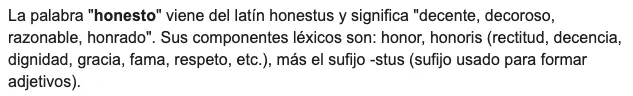
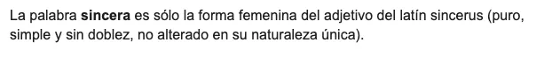

sobres 112
Archivos de cualquier tipo que he ido robando de internet: gente hablando sobre algo, y haciéndolo tan bien que solo podía guardarlo por si lo necesitaba en algún momento. Vivían en una carpeta de Google Drive; aquí están todos, comprimidos para que pesen poco.



